I didn't just work in Facebook's design system. I built the patterns infrastructure that made it worth using.
Role
Patterns Designer
Timeline
2022–2024 · 2 years
Team
Blueprint (Design Systems)
Tools
Figma, Internal tooling
Impact
60+
Pattern packages
10% → 95%
Component quality-check pass rate
4.3×
Above target on delivery
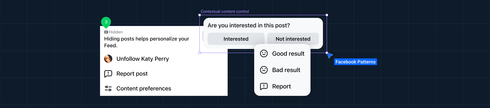
01 — Overview
The shared language for 3 billion users and the part of it nobody had built yet.
Blueprint is Facebook's design system, the shared language 191 product teams use to build for 3 billion users. My job wasn't to use the system. It was to build the part that made it teachable, repeatable, and trustworthy.
02 — The problem
On the surface, an adoption problem. Underneath, a trust problem.
When a team decided a component didn't quite fit, they'd build a custom version, without the edge-case handling, the dark-mode specs, or the token structure the original was built around. The next team copied that. And the next. The design system wasn't broken. The infrastructure around it was.
1 in 10
components passed quality check (internal design quality standard) when I joined.
03 — Context
"I was the first dedicated patterns designer in Blueprint's history. There was no template to follow."
04 — The process
Before I built anything, I audited what was already there.
I catalogued the existing Facebook experiences, looking for arrangements that kept repeating, each built slightly differently, with no shared reference.
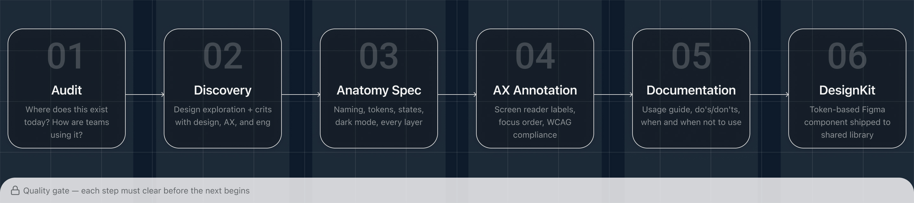
05 — Systems thinking
Then I stopped asking "what components do we need?" and started asking "what patterns underlie all of them?"
Bottom sheets were everywhere, Feed, Reels, Messaging, Marketplace, and every team had built their own. When three teams solve the same problem independently, that's a pattern waiting to be codified. I built 60+ pattern packages across 15+ types, the first patterns program in the system's history. Bottom sheets became the org's go-to reference, eventually unblocking GenAI work that had stalled waiting on the guidance.
Signature work · Bottom sheets
One pattern, from inconsistent to consistent.
A bottom sheet looks like one component. In practice it was a dozen patterns wearing the same shell, share sheets, comment sheets, action sheets, each team interpreting it differently. I built a decision matrix that mapped intent to the right type. Drag to compare.
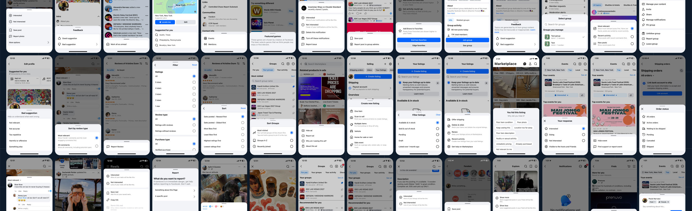
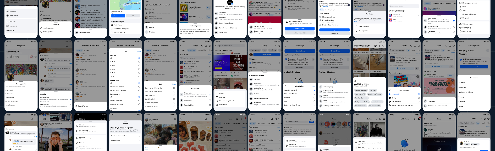
Before · inconsistent
After · Unified pattern
A small sample of the sprawl, before and after. The guidelines and framework I built gave teams one bottom-sheet pattern to reach for, replacing scattered one-off builds, and later unblocked GenAI work that had stalled waiting on the guidance.
Bottom sheet · before → after
So I specced it, down to the token.
Every bottom-sheet variant mapped to a named component, every gap to a spacing token, every string to a type style. It became the reference teams brought theirs back to. The spec set the bar; I held it.
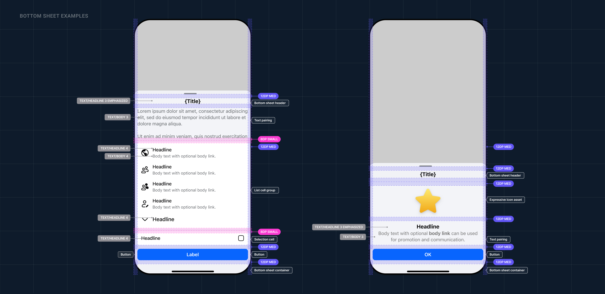
Components, spacing, and semantics annotated in one artifact, the level of rigor that turned "the org's go-to reference" from a claim into something a partner team could pick up and ship.
Bottom sheet · annotated spec
Anatomy of a pattern
A pattern isn't a screen, it's a set of specced components, and the rules for how they fit together.
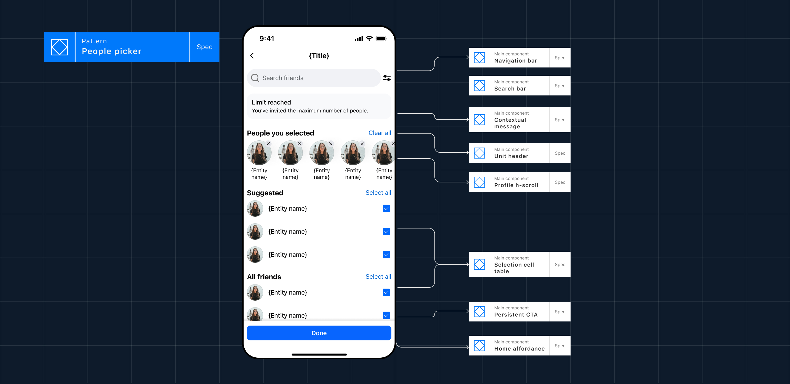
The People Picker, decomposed: each region of the pattern maps to a reusable main component with its own redlines, tokens, and accessibility annotations. Document the pieces and the relationships once, and any team can assemble the whole correctly.
People picker · pattern anatomy
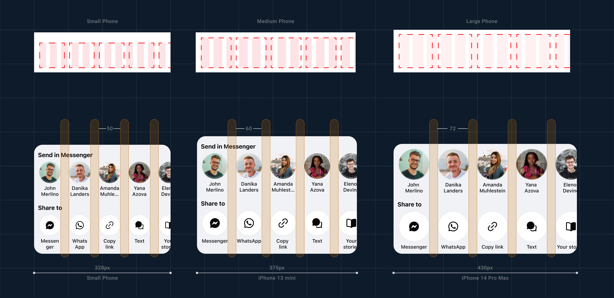
A single pattern, the share sheet, specced across every breakpoint, down to redline spacing and entity counts. This is the level of rigor every Blueprint component had to meet before it shipped.
Share sheet · responsive spec
Patterns in practice
Codified once, shipped into the surfaces 3 billion people use.
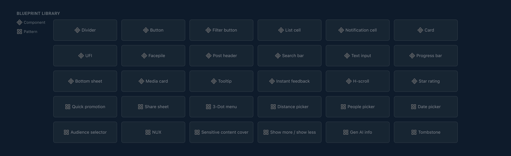
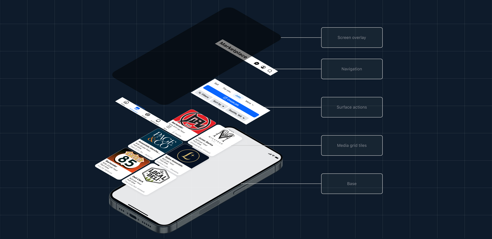
The component & pattern library · and a full surface exploded into its anatomical layers.
60+ packages · 15+ types
I was one of four chosen for Blueprint's Partnerships pilot, embedding with Settings & Controls, Marketplace, Events, and Local. Partner QC climbed from 20% to 80%+.
x-Meta Integrity partnership
How might we adopt a consistent design system without impacting key metrics?
The reporting feature migrated onto Bloks, adopting Blueprint across 12 surfaces, a global rollout validated through A/B testing and primary-metric monitoring, so modernizing the codebase never cost the numbers.
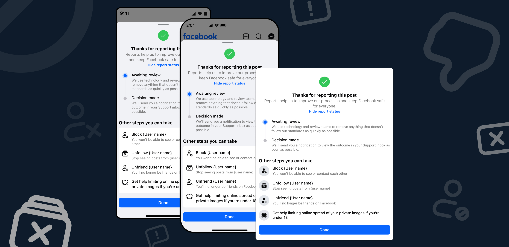
Shipped across three device sizes, honoring the spec at every breakpoint while primary metrics held flat.
Reporting flow · Bloks + Blueprint
See it in motion
The spec, alive ~ motion was half of what made these patterns reusable.
01 · States
Bottom sheet, every state
Drag, snap, dismiss, the motion spec other teams now reference.
02 · Flow
People picker, end to end
Search, select, limit-reached, one pattern, every entry point.
Try it yourself
The patterns page, running in the browser.
Scroll through the Patterns library: every reusable arrangement, documented with usage guidance and real examples. This is the single source designers reach for before building anything new.
blueprint.patterns/home
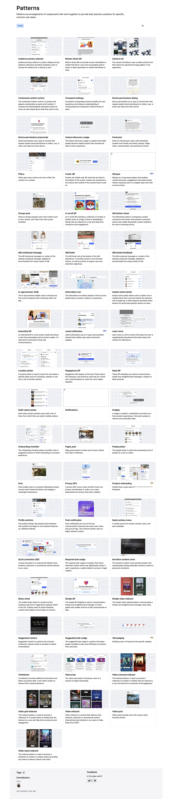
06 — The curveball
The patterns team never grew the way we hoped, at our largest we were 3 PDs. The real wall wasn't creative, it was engineering bandwidth: we couldn't get dedicated engineers to build our specs into code.
"Seeing horizontally across the org, who needed what and when, became one of the most valuable things I built."
07 — Outcome
What shipped, and what stuck.
10→95%
Component quality-check pass rate
4.3×
Above target on delivery
20→80%+
Partner team QC across 4 teams
Bottom-sheet standard → org referenceGenAI work unblocked
08 — Reflection
After I moved to Trust & Safety, deep in an unrelated project, I noticed a net-new card variant that didn't exist in the system. I wrote the spec, pushed it through Blueprint review, and it shipped. The methodology had become instinct, I didn't have to be on the team to think in systems.
The methodology is the product. I just happened to ship components along the way.